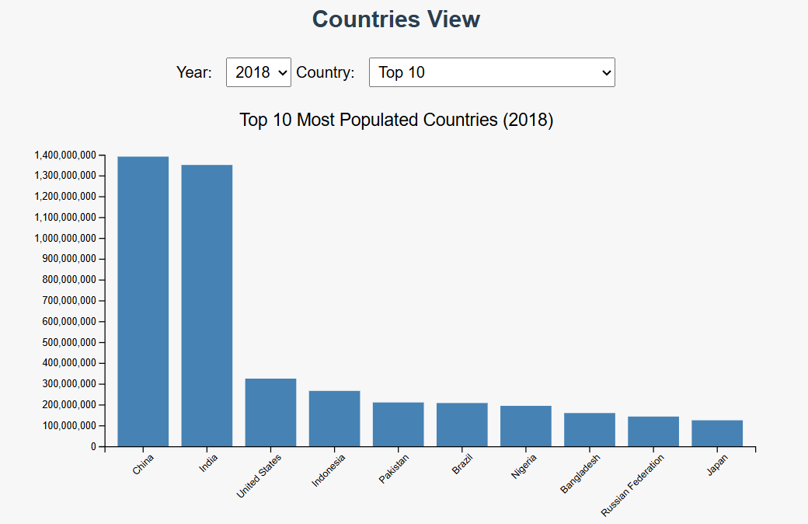
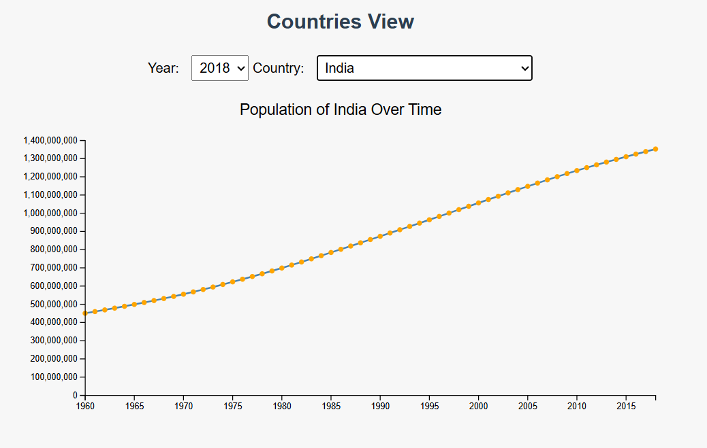
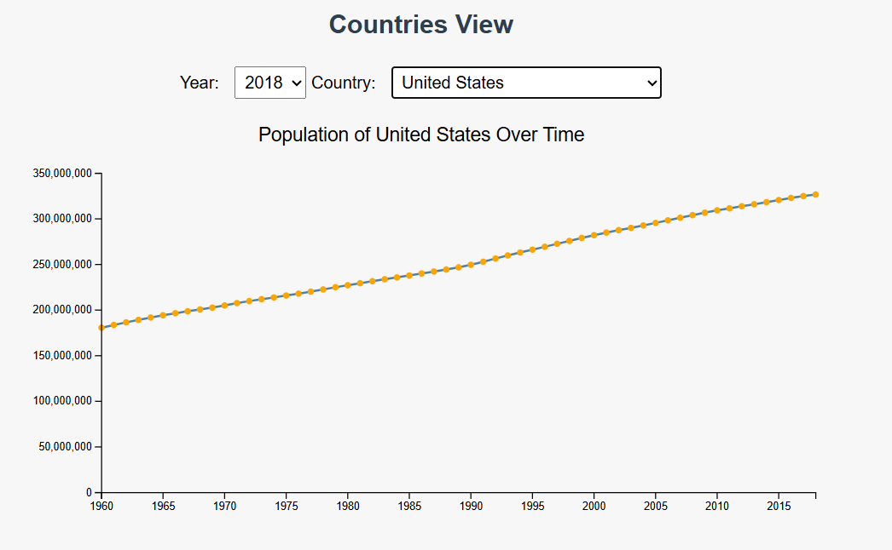
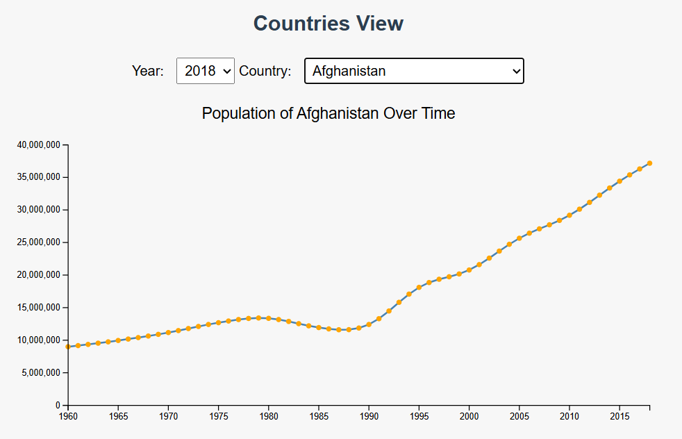
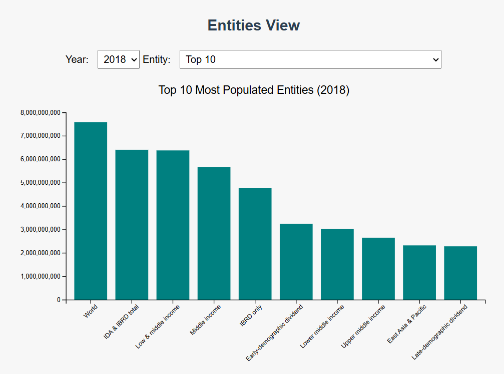
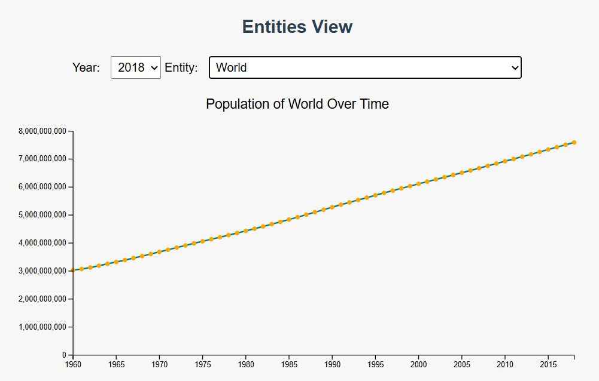
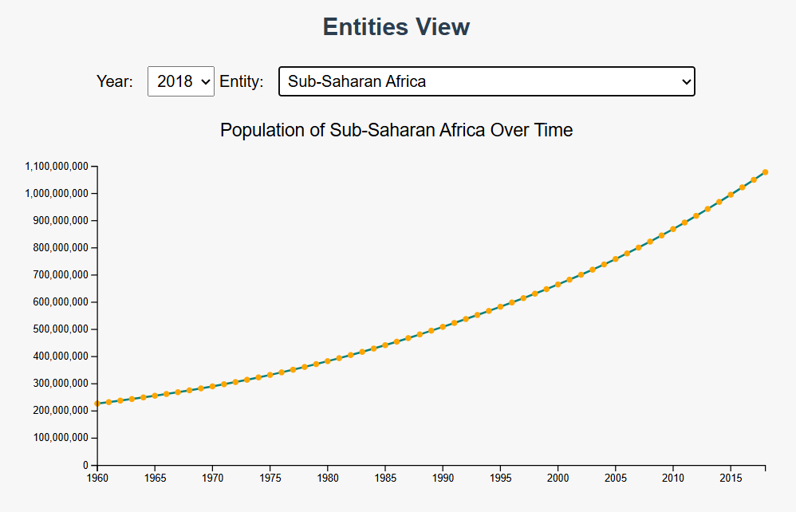

Interactive Population Visualization - Documentation
1. Project Overview
This project is an interactive D3.js visualization that allows users to explore global population data between 1960–2018.
It includes both country-level and non-country entity comparisons, split into two distinct sections for clarity.
2. Design Process
I started by selecting a reliable dataset of population figures from the World Bank, covering over 200 countries and various global entities.
I designed the visualization around two key views: countries and entity groups. Sketches and mockups guided the interface, helping structure dropdown logic, dynamic chart rendering, and data filtering.
Several iterations were made to filter non-country entities properly, organize dropdowns clearly, and ensure the user can toggle between bar and line charts fluidly.
3. Design Choices
Dual Dropdown Filters: For both Countries and Entities — each with their own Year selector and data selector.
Split Visual Sections: One view for Countries, another for Entities to keep context clean.
Bar Chart: Displays top 10 values when “Top 10” is selected.
Line Chart: Shows trends over time when a specific country or entity is chosen.
Tooltip + Transitions: Enhance user clarity and engagement.
4. How to Use
- Use the dropdowns in each section to choose a Year and a Country or Entity.
- If "Top 10" is selected, a bar chart shows the top 10 most populous entries.
- Selecting any specific country or entity displays a line chart showing its population over time.
- Entity explanations are available below the charts for added context.
5. Key Insights
China and India consistently top population charts from 1960–2018.
The U.S. shows a steady growth trend without surpassing Asian giants.
Entities like "Low & Middle Income" are larger in population than any one country due to their aggregated nature.
Sub-Saharan Africa shows rapid growth from the 1990s onward.
Afghanistan experienced a visible population dip in the late 1980s and early 1990s, which aligns with periods of intense conflict and war — highlighting how global events can shape demographic trends.
Screenshots (Evidence of Insights):
Countries View:
Top 10 Most Populated Countries (2018): China and India lead globally.

India Population Trend: Shows steady increase from 1960–2018.

USA Population Trend: Growth evident, but less steep than Asian countries.

Afghanistan Population Trend: Dip in the 1980s–90s, likely tied to conflict; then consistent growth.

Entities View:
Top 10 Most Populated Entities (2018): "Low & Middle Income" and regional aggregates surpass countries.

World Population Trend: Steady growth shown across 1960–2018.

Sub-Saharan Africa Trend: Rapid population increase from 1990s onward.

6. Walkthrough Video
Watch a 2–4 minute narrated walkthrough of the visualization:
7. Project Info
Project by Saimon Alam — Final D3.js Visualization Project